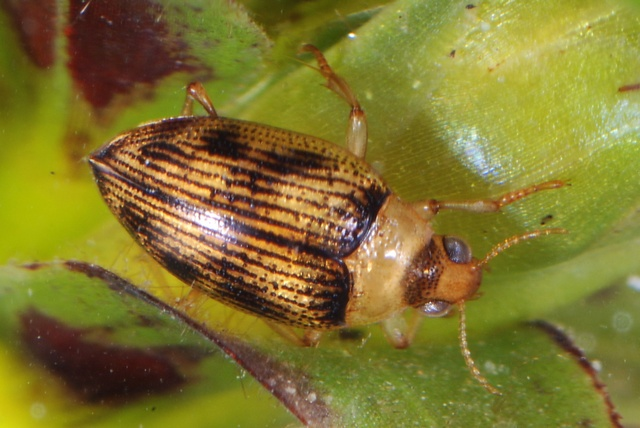

Haliplus sp
/ Les Haliplidae
Les Haliplidae sont une famille de coléoptères aquatiques qui nagent en utilisant un mouvement alternatif des pattes. Ils sont donc maladroits dans l'eau (comparés par exemple aux Dytiscidae ou Hydrophilidae), et préfèrent se déplacer en rampant. La famille se compose d'environ 200 espèces réparties en 5 genres, réparties partout où il existe un habitat d'eau douce ; c'est le seul membre existant de la superfamille Haliploidea. Ils sont également connus sous le nom de coléoptères aquatiques rampants ou haliplides.
/ La classification
La classification des haliplidés en tant que groupe distinct d'Adephaga est incontestable, et la plupart des entomologistes pensent qu'ils se sont développés à partir de coléoptères terrestres séparément des autres types de coléoptères aquatiques. Pendant de nombreuses décennies, la famille avait besoin d'être révisée, le dernier catalogue général étant publié par A. Zimmermann en 1920. BJ van Vondel a produit un catalogue mis à jour des taxons Haliplidae connus.

Comme les coléoptères plongeurs prédateurs ( Dytiscidae ), les coléoptères rampants forment une ramification précoce de l'Adephaga. Ils ont toujours des maxillaires rainurés et leur muscle tentoriolacinial ne s'attache pas à la base stipiale mésale. Leurs larves, comme celles des coléoptères prédateurs plongeurs, ne possèdent pas d'éclats de coquille d'œuf sur la tête. Il n'est pas encore déterminé si les Haliplidae et les Dytiscidae sont des parents les plus proches ou s'ils sont originaires indépendamment de l'Adephaga basal.[2]
Genres
ModifierLa famille n'est pas très diversifiée, avec seulement cinq genres acceptés.[4] Parmi ceux-ci, Peltodytes est probablement le plus ancestral, bien qu'il ait un certain nombre d'autapomorphies. Les autres ont plus de synapomorphies en commun ; Haliplus est le plus diversifié et semble inclure certaines lignées mineures autrefois considérées comme des genres indépendants.[2]